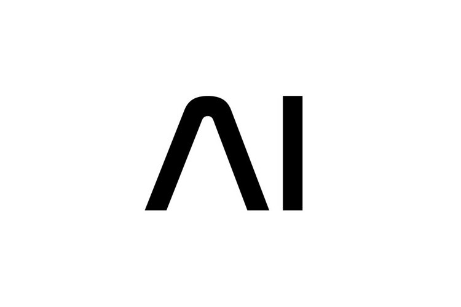

Projects
Lark Research
- Researched the platform Lark for new communication style.
- Setted up and simulated the communication platform for the company.

AI Conference
- Studying of AI concepts and termanology.
- Collection of accepted papers from multiple conferences nation-wide.

CSCI1302 Final Project
- Connected two APIs.
- Choosing a color of the day, you recieve a random fact associated with it.